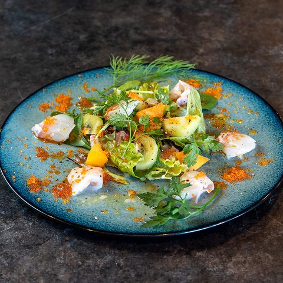

Concept
ちょっと一杯から、ゆっくり食事まで
群馬県前橋市城東町、中央前橋駅から歩いて2分。大通りの喧騒からほんの少し外れた場所に、銀彩はあります。
このたび銀彩は、ワインバルとして生まれ変わりました。肩の力を抜いて、気軽にワインを楽しんでいただくための店です。グラスは700円から。銘柄選びに迷ったら、その日の気分とお料理をお聞かせください。ぴったりの一杯をお注ぎします。
店内はグレーを基調とした落ち着いた設え。席はカウンター10席のみで、テーブル席も個室もありません。それは、料理をつくる音と香りを、いちばん近い距離でお届けしたいからです。目の前で仕上がる一皿を、出来立ての温度のまま召し上がっていただく。カウンターだけの店には、それができます。
お料理は、ワインに寄り添うイタリアンを軸に。上州牛のタリアータ、下田さんちのブランドロース豚の香草パン粉焼き、自家製赤ワインバターを添えた燻製ステーキ。旬鮮野菜のサラダやアヒージョ、〆にちょうどいい1/2サイズのパスタやリゾットまで、少しずつ、いろいろと楽しめる構成にしました。
仕事帰りにグラス一杯とおつまみだけ、という夜も。静かに話したい日のデートも、大切な方をもてなす会食も。全席をつなげれば10名様までの貸切、飲み放題付きの宴会コースも承ります。気負わずに過ごせる、大人のための時間をご用意してお待ちしています。
Our Taste
銀彩の味

赤ワインに寄り添う
上州牛と、下田さんちのブランド豚
群馬の恵みを、いちばんおいしい焼き加減で。上州牛はイチボのカルパッチョ、レアに火を入れたタリアータ、そしてランプのスモーキーステーキと、部位ごとに仕立てを変えてお出しします。下田畜産のブランドロース豚は、脂の軽やかさと上品な甘みが身上。香草パン粉焼きか、3種のソースで味の変化を楽しむシンプルソテーで。どちらも赤ワインが止まらなくなる一皿です。

白ワインと、旬鮮のひと皿
真鯛と旬鮮野菜
その日いちばんの魚を選び、昆布〆にして岩塩とレモンで、あるいはサラダ仕立てで軽やかに。大海老のジェノベーゼアヒージョ、真イカのフリット、赤海老のお造りと、白ワインが進む海の一皿を揃えました。茹であげたてのアスパラやブロッコリー、バーニャソースの温野菜など、素材そのものを味わう野菜料理も充実しています。

グラス700円から
気軽に選べるワイン
白・赤ともにグラスは700円から。まずは軽やかなドモード、少し飲み応えのあるヴィニウス、果実味の豊かなカリアと、価格帯ごとに性格の違う3種をグラスでご用意しています。ボトルは4,000円から6,500円まで、白6種・赤6種。ビール、日本酒、ウイスキー、焼酎、カクテル、ソフトドリンクも取り揃えていますので、ワインが得意でない方もご一緒にどうぞ。
Wine List
ワインリスト
※表示価格は税抜です。
白ワインWhite Wine
- DOMODOドモード
- グラス 700円
ボトル 4,000円 - VINUSヴィニウス
- グラス 800円
ボトル 4,500円 - CALLIAカリア
- グラス 900円
ボトル 5,000円 - TOHトォー
- ボトル 5,500円
- LONG BARNロングバーン
- ボトル 6,000円
- SUMARROCAスマロッカ
- ボトル 6,500円
赤ワインRed Wine
- DOMODOドモード
- グラス 700円
ボトル 4,000円 - VINUSヴィニウス
- グラス 800円
ボトル 4,500円 - CALLIAカリア
- グラス 900円
ボトル 5,000円 - BOLONEROボーロネーロ
- ボトル 5,500円
- LONG BARNロングバーン
- ボトル 6,000円
- COLEZIONE PRIVATAコレッチオーネ・プリヴァータ
- ボトル 6,500円
ワインに合うおつまみやお料理も各種ご用意しております。
お好みをお聞かせいただければ、お選びいたします。お気軽にスタッフまでお尋ねください。
Drink
お飲み物
※（ ）内は税込価格です。
Party Course
銀彩の宴会コース
6,600円税込
全7品／飲み放題付き（2時間）
ビール・焼酎・ウイスキー・ワイン・ソフトドリンクなど
- 1 サラダ 旬の野菜を使った彩りサラダ 自家製ドレッシングで
- 2 前菜 シェフおすすめの前菜盛り合わせ 季節の食材を使って
- 3 本日の鮮魚 本日の鮮魚を使用した一皿 香味野菜と特製ソースで
- 4 肉料理 厳選したお肉のグリル 自家製赤ワインバターを使用
- 5 一品料理 季節の食材を使ったシェフのおすすめ一品
- 6 スープ 本日のスープ 素材の旨みを活かして
- 7 パスタ 旬の食材を使った本日のパスタ シェフ仕立てで
※季節や仕入れにより内容は変更致します。
その他、品数やボリューム、金額等々は御相談に応じます。お気軽にお問い合わせください。
Space
店内のご案内

カウンター10席
1〜3名でのご利用にちょうど良い上質なカウンター席です。厨房の手仕事を目の前で眺めながら、出来立ての香りと音まで楽しめる特等席。全席をつなげれば、8名様から10名様までの貸切宴会も承ります。

駅近で立ち寄りやすい外観
上毛電気鉄道・中央前橋駅から徒歩2分。シンプルながら印象に残る外観で、初めてのご来店でも迷いにくい立地です。街中の喧騒を忘れ、ふらっとグラス一杯に立ち寄れる大人の隠れ家としてご利用ください。

ホテルライクな清潔感
お手洗いはホテルのように清潔で上質な空間に。細部まで行き届いた清掃と設えで、どなたにも安心してお過ごしいただけます。店全体の心配りを感じていただけるポイントです。
Reservation
ご予約
お席のご予約は、お電話またはホットペッパーグルメのネット予約で承ります。宴会コースや貸切（8名様〜）をご希望の際は、お電話にてお気軽にご相談ください。
※20歳未満の方はご同伴を含めご入店いただけません。
※ネット予約は来店日当日21時まで受付。曜日やコースにより締切が異なる場合があります。
Information
店舗情報
| 店名 | ワインバル 銀彩（ぎんさい） |
|---|---|
| 住所 | 〒371-0016 群馬県前橋市城東町3丁目3-9 |
| アクセス | 上毛電気鉄道 中央前橋駅より徒歩約2分／JR前橋駅より徒歩約15分 |
| 電話 | 027-226-5655 |
| 営業時間 | 18:00〜23:00（料理L.O. 22:00／ドリンクL.O. 22:30） |
| 定休日 | 日曜日 |
| 予算目安 | 3,000〜6,000円（宴会コース 6,600円・飲み放題付き） |
| 席数 | 全10席（全席カウンター） 個室・座敷・テラス席なし |
| 貸切 | 8名様〜10名様まで可（お電話にてご相談ください） |
| クレジットカード | VISA／Mastercard／AMEX／DINERS／JCB |
| 電子マネー | 楽天Edy／Suica／PASMO／ICOCA／QUICPay |
| QRコード決済 | PayPay／d払い／au PAY |
| 喫煙 | 全席喫煙可（加熱式たばこに限ります） |
| 駐車場 | なし（近隣のコインパーキングをご利用ください） |
| 設備 | Wi-Fiなし／バリアフリー対応なし |
| ご利用について | 20歳未満の方はご同伴を含めご入店いただけません。お子様連れのご利用は可能です。お祝い・サプライズのご相談も承ります。 |